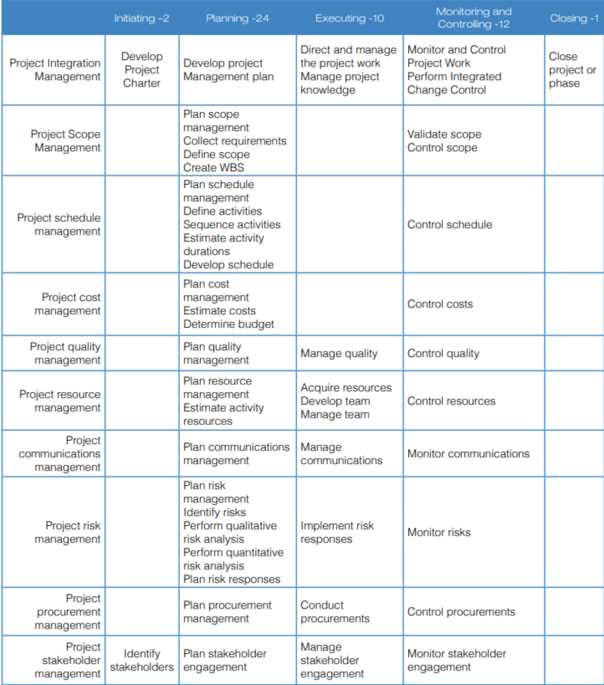
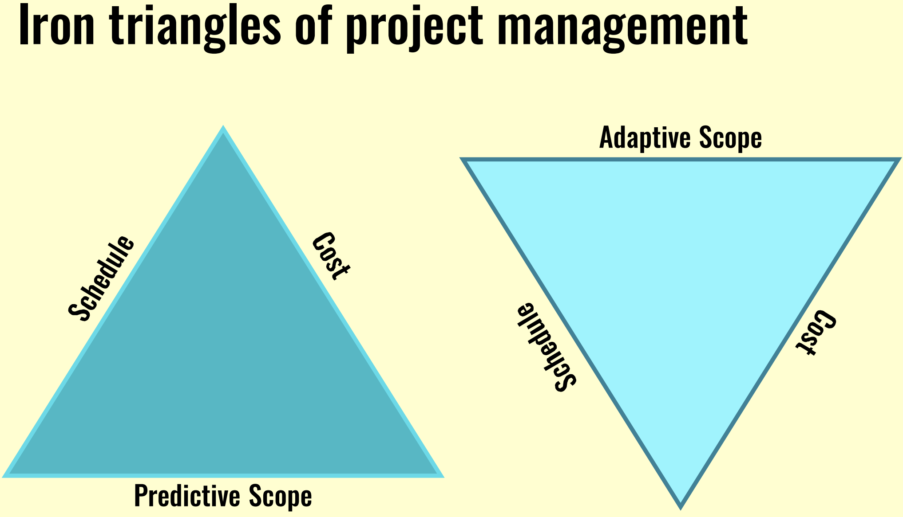

| Project | Operaitons |
|---|---|
| Temporary endeavours | Ongoing activities |
| Accomplishes specific goal or objective by creating unique product, service or result | Produces goods or services |
| Finite and defined budget | Ongoing costs |
| Managed by project managers | Managed by Operational / Functional managers |
| Projects can initiate operations and viceversa. Lets consider construction of a manufacturing plant. It is a project and the end result is a unique manufacturing plant that is used to manufacture different products. The manufacture of products involve operations. Thus project has lead to operations. Now, for instance, if the sale of the manufactured product is low, then to increase sales, online presence is required. Then a new project will be initiated to deliver a website to take orders online. Thus operations have lead to initiation of a project. | |
| Predictive | Adaptive |
|---|---|
| Based on the assumption that future can be accurately predicted using past trends and data | Based on assumption that future is uncertain and subjected to change |
| Involves long term planning to predict future events or outcomes | Involves short term flexible planning that focuses on adaptation and quick decision making |
| Less flexibility and adaptability to unexpected changes | More flexible and able to adapt to unexpected changes |
| Detailed plans and budgets | Less efficient and more costly due to frequent changes |
| More suited for projects involving physical elements like construction projects, weather forcasting etc. | More suited for knowledge based projects like software development, crisis management, marketing etc. |
| Waterfall model | Agile model |
Risk is an uncertain event or condition. It can be either positive (oppurtunity) or negative (threat). The risks are identified, analysed and documented in Risk register and responded accordingly. Risk can be a pure risk like an employee loosing a limb or business risk like techinical failure.
Issues are the risk events that have occured. Every issue is logged in issue log and has a specific owner and resolution date.
Assumptions are some of the aspects that are believed to be true but not proven to be true. Assumption can also be a risk. Examples are stake holder support, availability of resources etc.
Constraint can be anything that limits the options like budget, resources, vendors, requirements etc.
Scope defines the boundaries of a project, and outline what will be included or excluded. It contains detailed description of objectives, deliverables and requirements.
This is done through processes selected from a total of 49 processes divided into 5 process groups and 10 knowledge areas.
The Scope, schedule and cost for iron triangle. In this triangle, if one side changes, then the others sides are also impacted.
The triangle on the left represents a predictive project where all the attributes are predefined and increase in scope will further increases either the schedule or scope.
The triangle on the right represents a adaptive project, where the cost and schedule are fixed and the adjustments are made to the adaptive scope so as to accommodate the most important deliverables first and keep the schedule and cost in check.